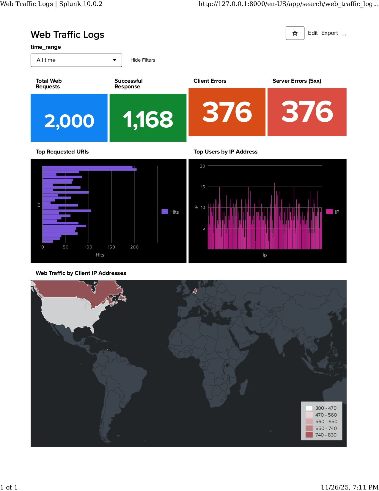
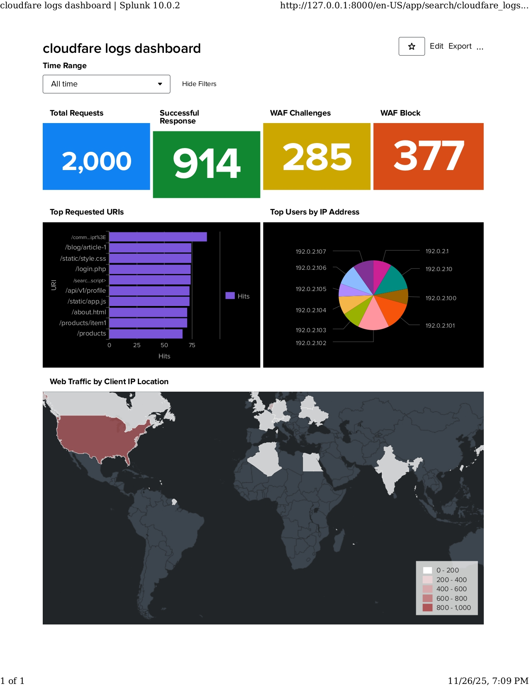

Projects
🔵 AI One-Click Security Triage Tool
Automated vulnerability triage integrating Nmap, Nessus, JSON automation, and LLM-powered severity reasoning. Generates dashboards, analytics, and risk scores.
View on GitHub

Splunk Engineering — Attack Detection Dashboards
Built SIEM dashboards for Cloudflare, SSH logs, and Web Traffic Log detection pipelines as part of SOC-based analysis workflows.
Skills: Splunk · SIEM · Dashboarding · Log Parsing

